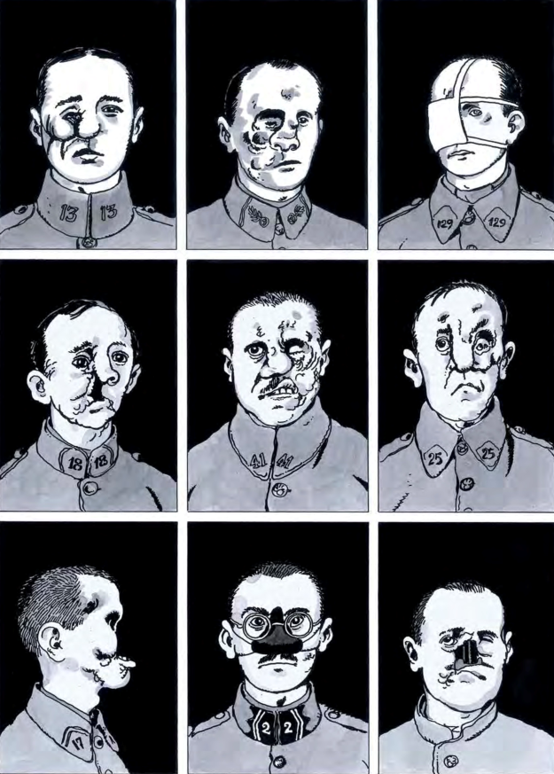

Chapitre 1 — 3e
J'ai été dans les tranchées
Que reste-t-il d'un homme quand il ne reste que ses lettres ?
Agir dans la cité : individu et pouvoir · du 7 septembre au 13 octobre

Les compétences du chapitre 1
Ce que chaque séance travaille, et ce qui revient d'une séance à l'autre.
majeure
mineure
Le parcours du chapitre
Séance 1 sur 8
SÉANCE 1
Entrée par l'image
Objectif : Décrire une image de guerre en nommant plans, cadrage, point de vue et hors champ, puis définir avec la classe ce qu'est « faire mémoire ».
COMPÉTENCES DE LA SÉANCE
Étape 1 : j'observe en silence
04:32